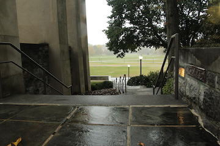

Coach Beamer's statue
This statue was placed for Beamer's years as Virginia Tech's head coach from 1987-2015. It stands on the south side of Lane Stadium for all to see. It is a statue of Beamer leaning against a bench where visitors can come and sit next to an image of the greatest coach in VT history.
Cassell Coliseum Basketball Court
This shows the entire arena of Cassell which seats 9,847 fans. The Virginia Tech team will be led by a new head coach Mike Young this coming season.
Autumn Tree on Beamer Lane
Now that the season is turning, the trees all along the campus streets are changing from green to orange. Almost as if the trees are Virginia Tech fans too!
William Addison Caldwell's view of Corp of Cadet Quad
This is a picture of the Corp of Cadet quad, taken over the shoulder of William Addison Caldwell's statue. William Caldwell was the first student to enroll at Virginia Tech in 1872. He had to walk more than 28 miles to come to Virginia Tech, and a statue of him now stands at the stairs leading to the American flag outside the Corp of Cadet quad.
Stairs leading to Lane Stadium
These are stairs leading up to an entrance outside of Lane Stadium. Out past the stairs you can see Beamer Lane, a road named after Virginia Tech's most famous coach. And beyond that the lights of Virginia Tech practice fields.
Corp of Cadet Dorms
This is an angle of Corp of Cadet Dorms at the front of their quad. These buildings are made of Hokie Stone and help house the largest number of Cadets to ever attend Virginia Tech
Mirrored Image on Moss Art Center
The Moss Art Center is made of this beautiful blue glass. Against the windows, you can see a mirrored reflection of the scenery out on the street leading to the Torg. bridge.

Stairs Down Side of Pylons
These stairs lead down past the VT pylons onto the Drill field. The pylons overlook the drillfield where almost every student walks across on campus.

Slusher Hall
Slusher Hall is the tallest building on Virginia Tech campus, with 7 floors of dorm rooms. It stands high above the rest of campus and can be seen from anywhere on the drillfield.
Washington Street
Washington Street passes right by many of the dorms on campus. Along with tennis courts, Cassell Coliseum, and Mccomas gym. On any game day, you can see neverending lines of fans in their cars coming down the road to see our Hokies compete.

Torgerson Bridge
Torgerson Bridge is at the front entrance to Virginia Tech campus. It holds many of VT's students studying in the library and going to class all over the building.
Slanted Arches Under Moss Art Center Entrance
The Moss Art Center holds most of the upper level classes for students in the school of liberal arts. It has music halls, film rooms, etc. Therefore it makes sense for the building to be the most unique looking building on campus, with slanted arches, different colored windows, and strange shapes.


{kind=link}
{kind=link}
{kind=link}
{kind=link}
{kind=link}
{kind=link}
{kind=link}
{kind=link}
{kind=link}
{kind=link}